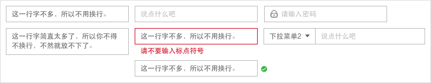

08
组件
Components
面包屑
用途：告诉用户当前所在位置，且当前页面在系统层级结构中的位置以及父子级页面间的关系。
示例：

设计要点：面包屑层级不宜过多。
搜索
用途：输入关键字搜索信息。
示例：
设计要点：
- 搜索有两种状态：按钮和输入框。
- 按钮点击后弹出输入框，适用于空间不够的情况下。
- 在可能的情况下，为关键字智能联想。
单/复选框
用途：
- 单选框：允许人们从两个或多个互斥选项中只选择一个。
- 复选框：允许人们选择列表中的任意选项，一个或多个，数量不限。
示例：
设计要点：
- 搜索有两种状态：按钮和输入框。
- 按钮点击后弹出输入框，适用于空间不够的情况下。
- 在可能的情况下，为关键字智能联想。
下拉菜单
用途：当页面内有多个平级菜单动作彼此相关，或者有类似或互补的功能时，可用此组建进行收纳。
示例：
设计要点：
- 选中状态和普通状态要有所区别。
- 单选和复选的样式要进行区分。
输入框
用途：录入用户信息或编辑现有信息。
示例：

设计要点：
- 输入框略大于最长文字即可，当输入的文字过长时可换行。
- 输入框拥有未输入、校验、报错、通过验证等状态。
- 输入框也可以和其他控件或图标组合。
分页器
用途：当内容过多时，可切换页码浏览。
示例：
设计要点：
- 完整的分页器包括：页码、翻页、跳转、数据总数、指定页面显示数据量。
- 根据不同情况，分页器的元素可以搭配使用。
- 在空间不够时，也可以简化分页器。